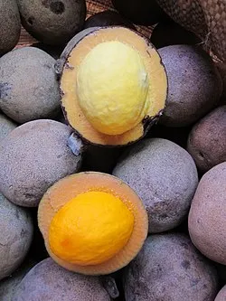
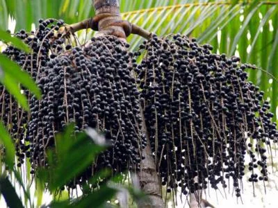
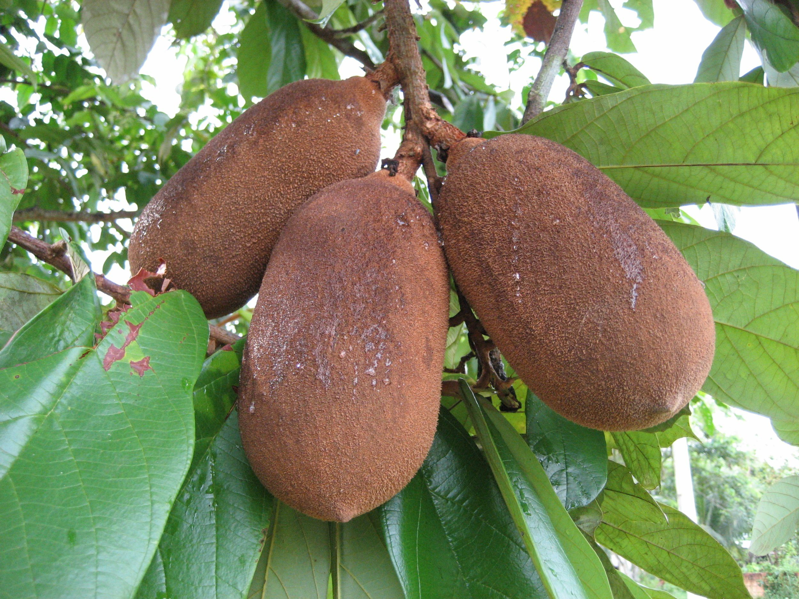
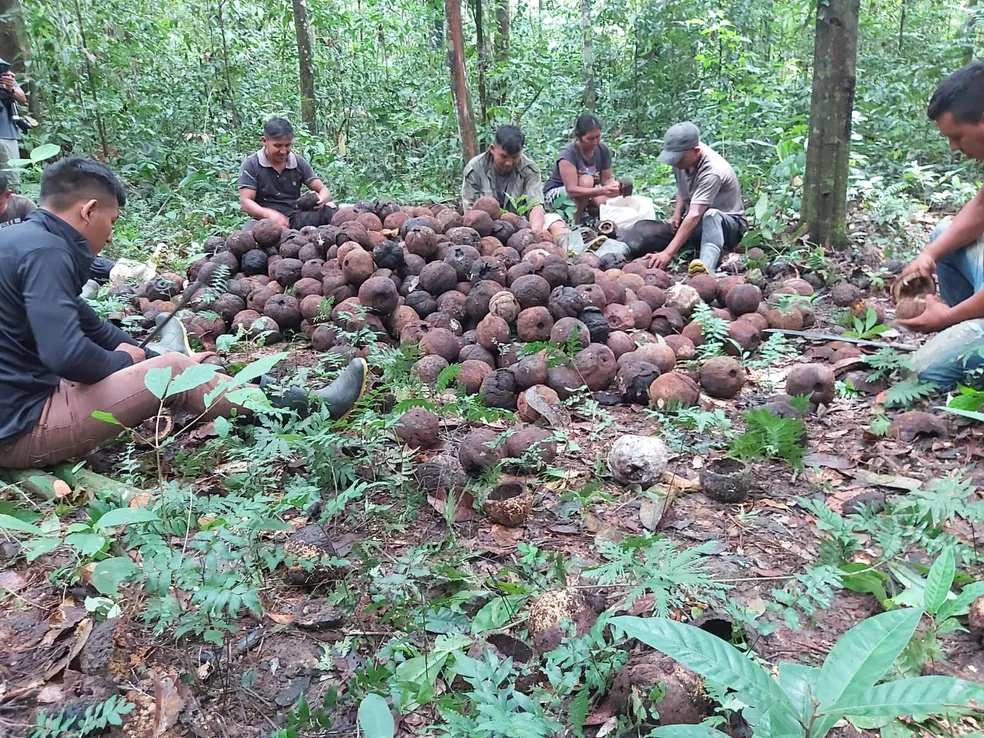
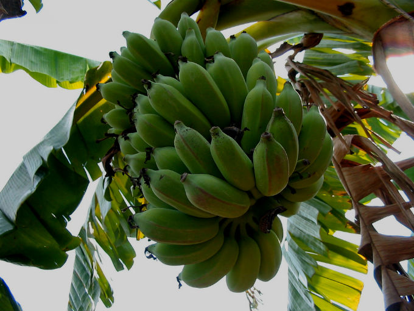
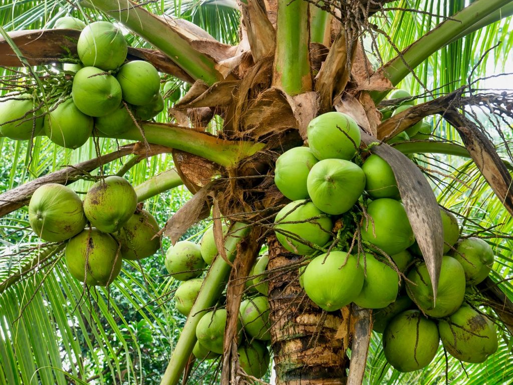
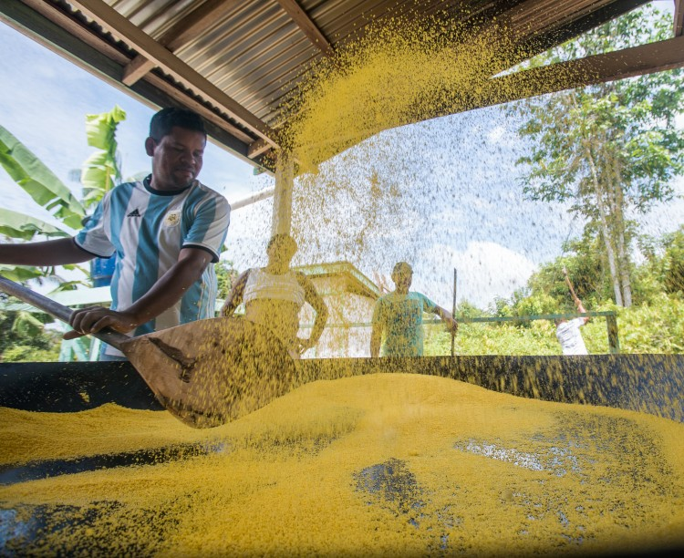
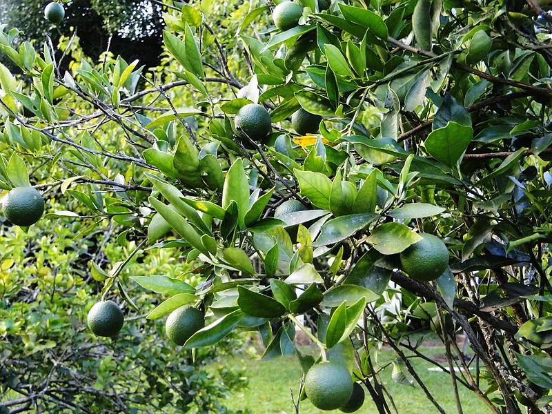
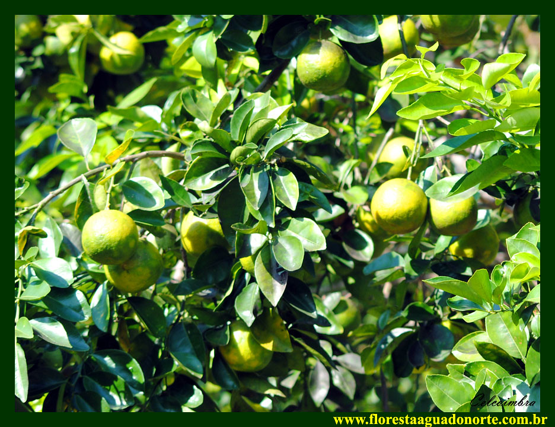

Piquía
Fruta exótica da região amazônica.
A diversidade da produção agroextrativista representa a força e o trabalho das famílias da RESEX Arioca Pruanã.

Fruta exótica da região amazônica.

Fruto de grande importância para a economia das comunidades amazônicas.

Produção agrícola das famílias da comunidade.

Fruto amazônico produzido na região.

Produto extrativista de importância para a comunidade.

Produção agrícola das famílias cooperadas.

Produto cultivado pelas famílias da comunidade.

Hortaliça presente na produção local.

Produto presente em todas as casas.

Fruto produzido pelas famílias da comunidade.

Produção de frutas da comunidade.

Produto agrícola cultivado na região.